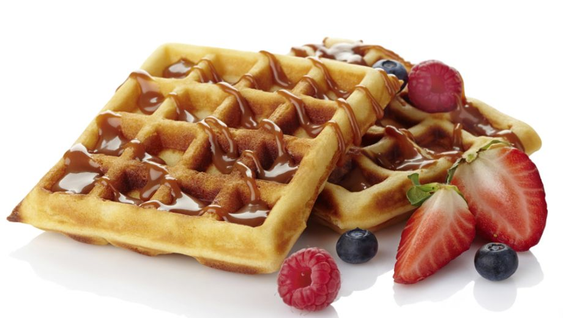

wafels
dit recept laat je zien wat je nodig hebt en wat je moet doen om wafels te maken
Wat heb je nodig?
- 100 gram
- 75 gram witte basterdsuiker
- mespuntje zout
- 2 eiren
- 500 ml melk
- 300 gram bloem
- 10gram bakpoeder
- wafelijzer
hoe maak je belgische wafels
- zorg dat de boter op kamertemperatuur is; klop deze in een flinke kom met de basterdsuiker en het zout schuimig.
- meng nu een voor een de eieren erdoor.
- roer nu beertje bij beetje de helft van de melk erdoor.
- meng nu het bakpoeder met de bloem, zeef het boven het beslag en roer met een spatel de bloem er doorheen.
- voeg al roerend de de rest van de melk toe.
- verhit het wafel ijzer, en vet het in.
- giet nu een laagje beslag in het wafelijzer en sluit de deksel.
